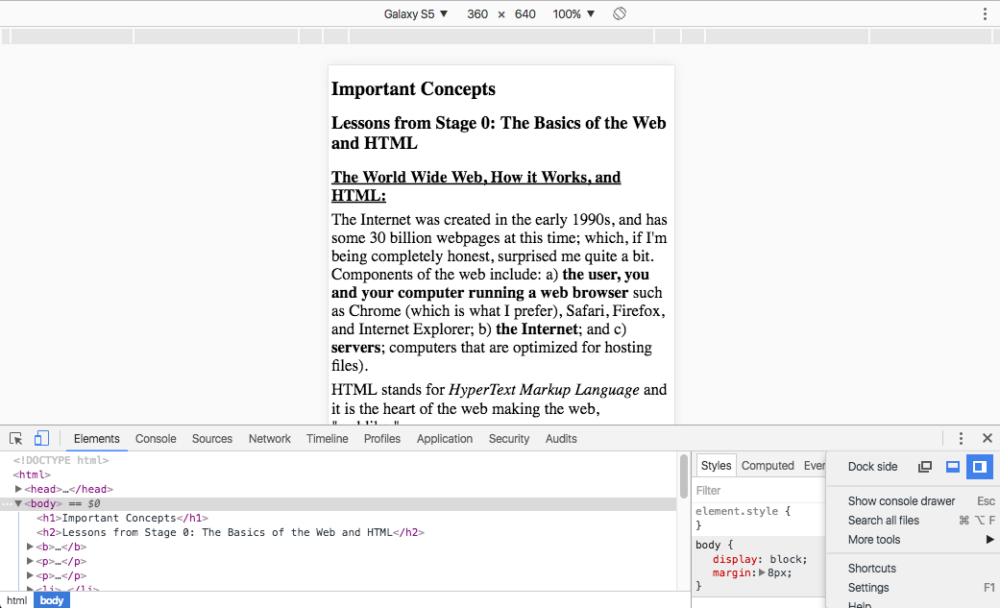
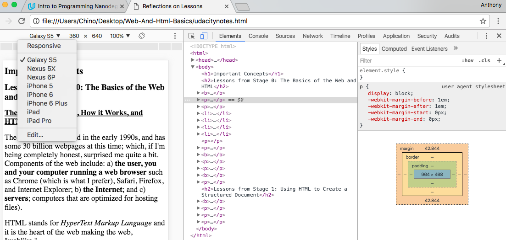

The Internet was created in the early 1990s, and has some 30 billion webpages at this time; which, if I'm being completely honest, surprised me quite a bit. Components of the web include: a) the user, you and your computer running a web browser such as Chrome (which is what I prefer), Safari, Firefox, and Internet Explorer; b) the Internet; and c) servers; computers that are optimized for hosting files).
HTML stands for HyperText Markup Language and it is the heart of the web making the web, "weblike."
Accordingly, HTML is made up of:
To troubleshoot issues you may experience with your HTML code, check out this website to validate your HTML code.
Tags and Elements:Computers interpret language literally, so it makes sense that computer programming languages are designed to limit ambiguity. HTML documents are made up of HTML elements, and tags typically bookmark the content of an element with an opening and closing tag. These tags help computers interpret the HTML you've written with more specificity, giving your webpage more structure, and design. Tags can be used to bold, italicize, or underline words of text, for example. For an HTML Element Reference table in which HTML tags are ordered alphabetically, contain a description, and a note as to if that tag is supported by the current version of HTML, HTML 5, click here
Additonally, some elements accept values called attributes in their opening tags that provide additional information to the browser, such as the anchor tag attribute that was drawn up by, and explained, by Scott. I found this example very teachable because this anchor tag creates the hyperlink, or link, demonstrating the power of the connectivity of the web with such a simple line of code:
Inline elements are just text, which code displays in a line in your browser window. There can be several spaces between the text of code, called whitespace, but unless otherwise styled, the text will simply end in its current line, and go to the next, such as when the single line break tag, br, is used. Also, don't forget that images are inline elements. However, unlike inline elements, block elements actually form a box around the text to which heights, and widths can be applied. Examples of block elements include p and div tags. It follows then, that container elements do nothing but contain stuff inside them. Container elements can be styled inline via the span tag, or block via the div tag, to which complex styling can be applied in CSS.
Developer Tools is an incredible tool for designers. To use Developer Tools for your webpage, simply open your file in Chrome, right click, and select Inspect found at the bottom of the pop-up menu. Once developer tools opened, the dockside was displayed at the bottom of my window:

However, I'd suggest changing your view so that dock is placed to the right. In the bottom-right corner in the above screenshot, you can see how to change the display location of your dock, resulting in:

Furthermore, while in Developer Tools, you can also select the type of media screen you'd like to test your code in, including Galaxy S5, Nexux 5X, Nexus 6P, iPhone 5, iPhone 6, iPhone 6 Plus, iPad, and the iPadPro, as is displayed in the drop down menu in the top-left corner in the above screenshot.
Having the dock on the right also more readily allows you to inspect the margin, border, or padding surrounding elements. You can play around with these numbers in DevTools and immediately see the impact they make on your webpage. You can also add various styling components under element.syle {--insert styling--} to immediately see the impact say, changing a font color, might have on your webpage.
About Me:
I graduated from college almost 6 years ago now with a Bachelor of the Arts, in Theatre. After graduation I worked in regional theatre production, until I left the arts to work full time in the restaurant service industry. After a few years, however, I've realized that waiting tables won't get me where I want to be, thus I've begun my adventure into the field of coding and programming. Udacity was recommened to me by a personal friend, Michael Lucero, who is currently enrolled in your Front-End Nanodegree.